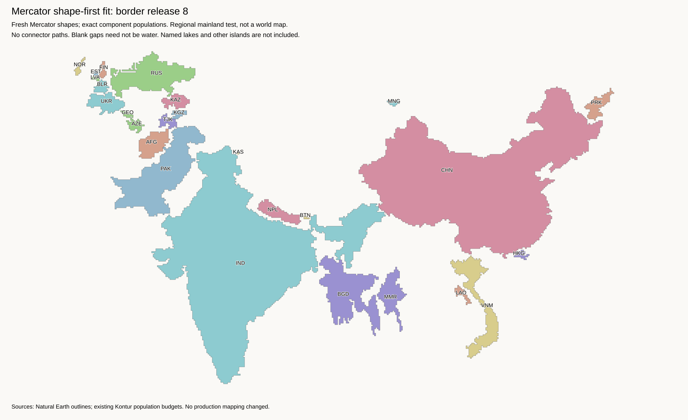
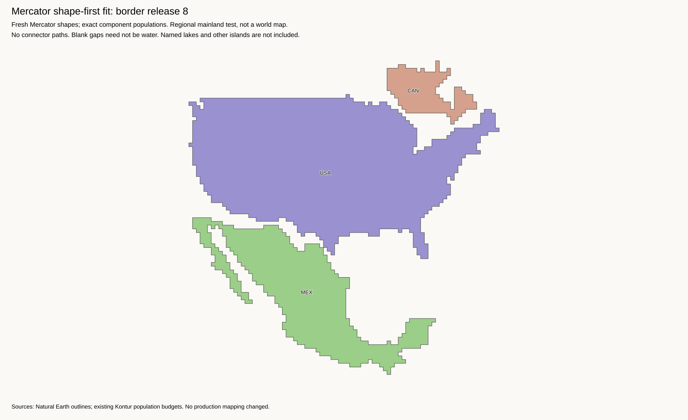
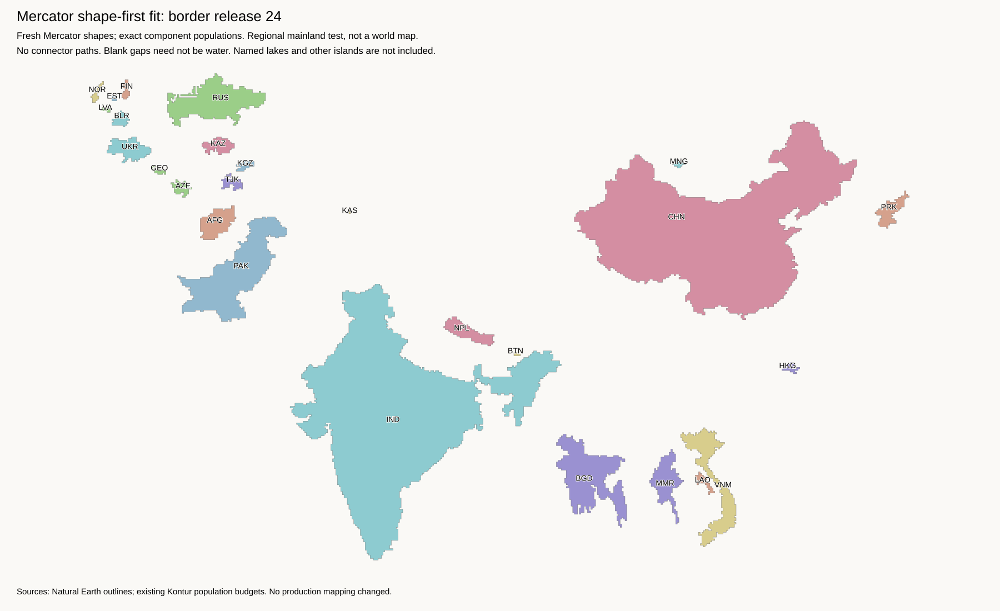
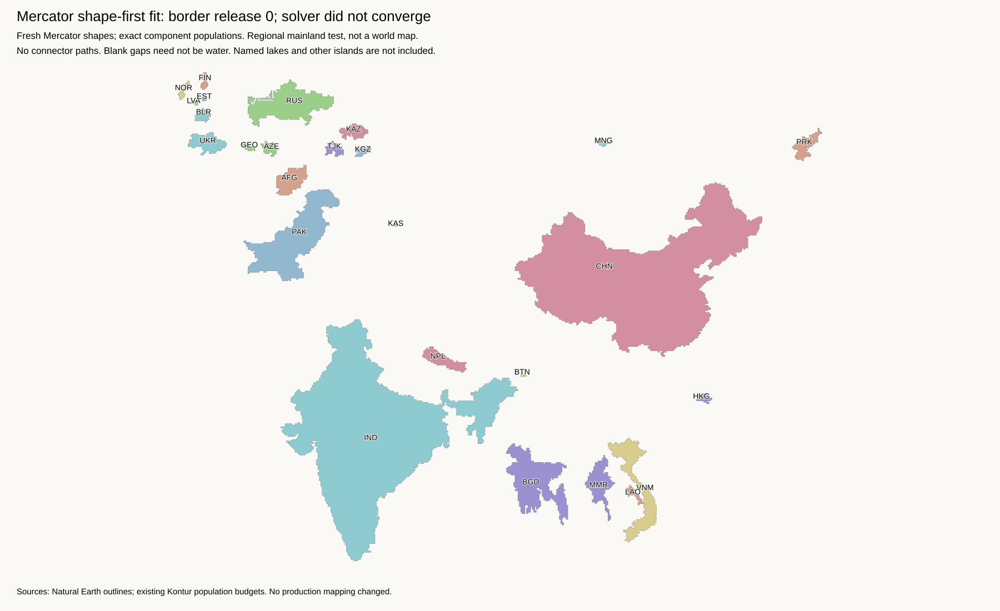

This was the wrong pipeline for the requested comparison. Use the margin-one lake fit with a Mercator starting projection instead. This page remains an archive of the separate shape-first experiment.
These shapes start from the original Mercator outlines. They are not the old distorted shapes moved apart. Each component keeps its existing population tile budget.
Regional mainland test, not a replacement world map. Named lakes and secondary islands are not included. The existing lake-aware world layout and H3-MON export are unchanged. Blank gaps are not geographic seas.
Method, failures, and commands · Work log · Mercator and Equal Earth outlines · Independent archive checks
Russia stays near Europe. China sits farther east. India keeps its peninsula and northeastern extension. Mongolia stays north of China's centre. There are no connector paths around Kazakhstan.

Fit report and lost borders · Placed tiles · Fresh templates
This test has 26 components and 25,845 tiles, taken from the 55,000-tile world budget. The fit uses Mercator population centres, population-weighted border preferences, collision penalties, and broad direction constraints. Final packing changes no component shape or count and adds no false contact.
Only four of 46 source contacts remain. Nineteen removed contacts fail the earlier sparse-border test. Thus this is a useful shape-preserving reference, not an approved choice of border losses. Canada and the Americas are outside this Eurasia test. Secondary islands, including Sri Lanka, are absent.
For 22 of the 46 border pairs, the nearest tile centres are at most three tile spacings apart. This includes the four retained contacts. These short gaps are candidates for limited deformation; proximity alone does not count as a retained border.
The largest final packing move is 1.41 tiles from the continuous solution. No extra spacing expansion is needed. There are no measured broad centre-order violations, but that does not prove correct coast relationships.
Canada's mainland keeps Hudson Bay. The United States and Mexico also keep their fresh shapes. Neither land border touches. This three-component test has 3,317 tiles. Alaska, the Arctic islands, and the Great Lakes are not included.

| Test | Solver converged? | Final packing expansion | Contacts retained |
|---|---|---|---|
| Release scale 8 | Yes | 1.0 | 4 / 46 |
| Release scale 24 | Yes | 1.6 | 0 / 46 |
| Quadratic control | No | 1.6 | 1 / 46 |
| North America, scale 8 | Yes | 1.0 | 0 / 2 |
The release scale controls how strongly distant border anchors pull together. It is not a maximum gap. The quadratic control has no reduction in long-distance force. Neither comparison improves the packed layout.

Final packing moves a component by up to 117.75 tiles from the continuous solution. Its packed energy is higher than its starting energy. Continuous convergence does not make this a good layout. Report

SLSQP reports a positive directional derivative. This is a rendered failed iterate, not a successful control. Report
The first fit used geometric centres and put Mongolia south of China. Soft direction penalties did not prevent this. Hard direction checks fixed that error but left large gaps. Population-centred placement then moved Russia west without a named-country position rule. Population source coordinates were converted from Equal Earth to longitude and latitude, then to Mercator; they were not reused as Mercator coordinates.
Keep Mercator shape targets. Add bounded deformation to close small gaps along populated borders without recreating the Kazakhstan pinch point. Include empty-lake and island constraints before a whole-world fit. Do not copy old lake cells into the new coordinate frame.
All 198 tests pass. Every placed component is an exact translation of its fresh template. Saved archives include counts, input hashes, solver status, packing shifts, and lost-border records.